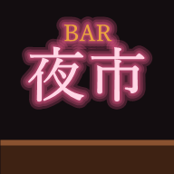

BAR 夜市
スマホのホーム画面に追加すると、アプリのように遊べます。無料です。
お使いの iPhone の手順は下の「iPhone」です。
お使いの Android の手順は下の「Android」です。
iPhone・iPad
- Safari でこのページを開きます（LINE などの中で開いた場合は、右下のメニューから「Safariで開く」）。
- 画面下の 共有ボタン（四角から矢印が上に出ているマーク）を押します。
- メニューを下へ動かして 「ホーム画面に追加」 を押します。
- 右上の 「追加」 を押すと、ホーム画面に夜市のアイコンが出ます。
Android
- Chrome でこのページを開きます。
- 右上の ︙（縦に点3つ） を押します。
- 「ホーム画面に追加」 または 「アプリをインストール」 を押します。
- 「追加」「インストール」 を押すと、ホーム画面に夜市のアイコンが出ます。
一度開けば、電波がないところでも遊べます。新しい版が出たときは、電波のあるところで開くと自動で新しくなります。
ゲームに戻る